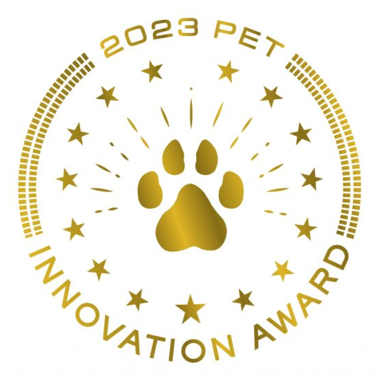
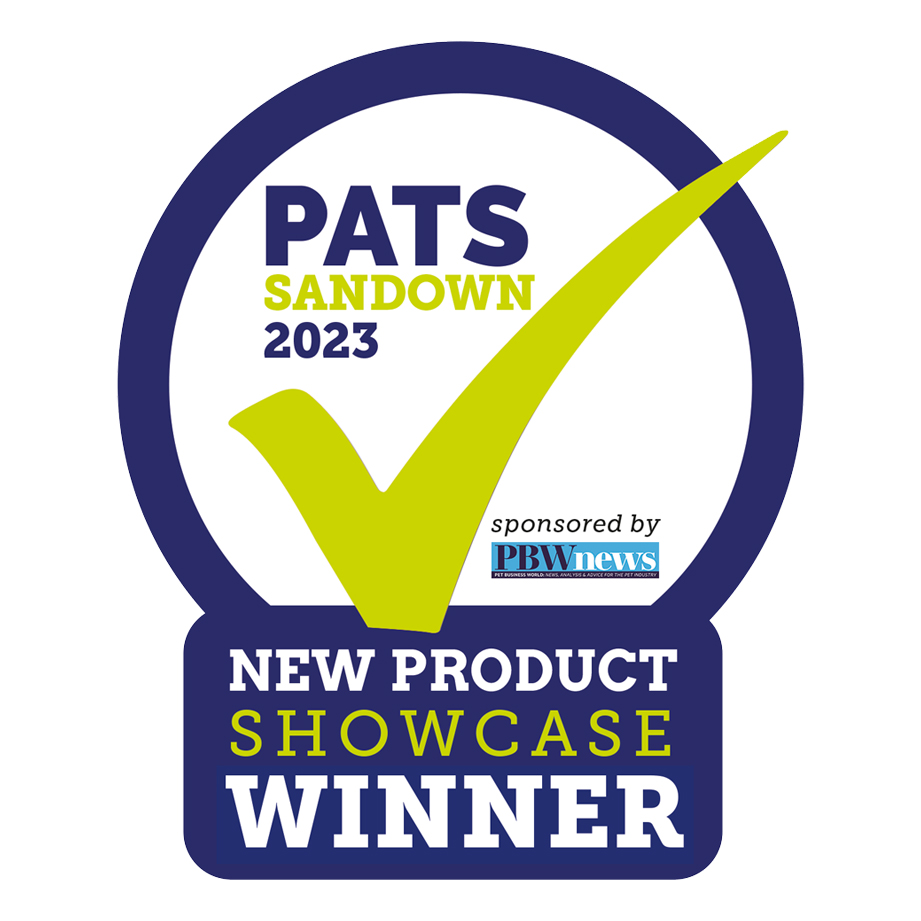
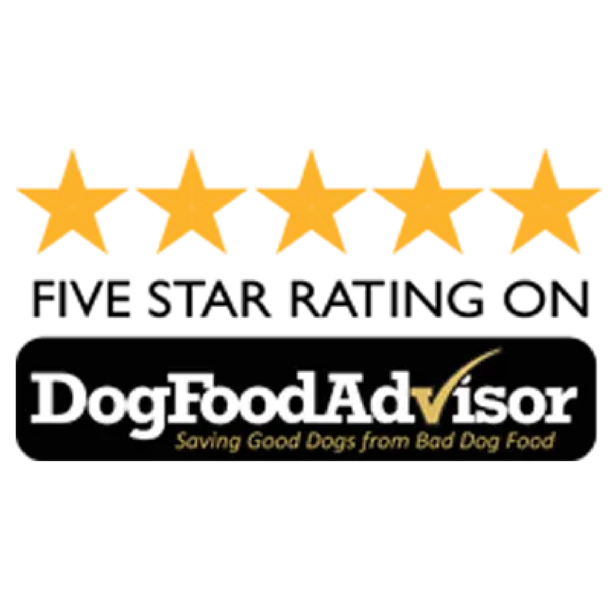
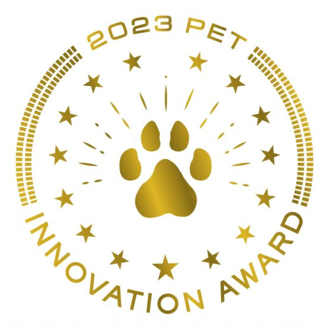
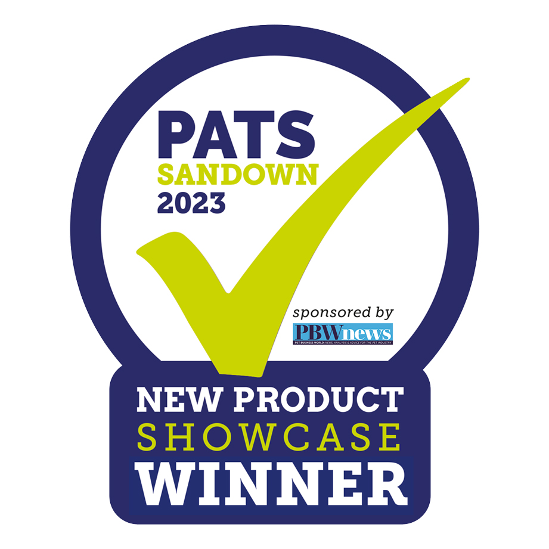
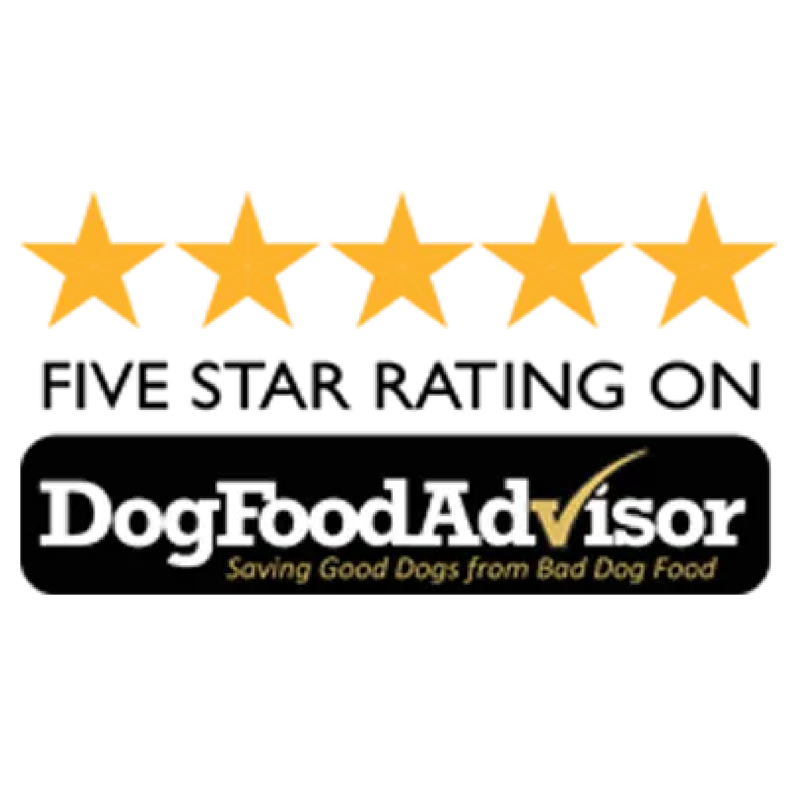

Revolution
We believe that every pet deserves the best. That’s why we’ve created the world’s first 100% organic pet food. We’re on a mission to revolutionise the pet food industry and make the world a better place for our pets. We founded Pet Bistro on the pillars of love, health, and transparency. In a world where pet food options were often a maze of fine print and dubious ingredients, we pledged to be different. Our quest was to create a sanctuary of nourishment, where every pet parent could trust that they were providing their furry family with the best.
Our philosophy is simple: serve up drool-worthy dishes that are not only paw-licking good but also bursting with nutritional value. Just like the discerning Mr. Snuffles in the image above, who savors our gourmet selections with the same fervor he reserves for a morning game of fetch, we know your canine companion will relish every bite.
Established in 2009, Pet Bistro has been dedicated to formulating recipes that deliver unparalleled whole food nutrition to pets.
Conscientiously Selected Ingredients
Our commitment to quality is evident in our choice of ingredients. We proudly use descriptors like cage-free, pasture-raised, and wild-caught because our proteins genuinely embody these attributes.
Artisanal Creations, Not Factory Outputs
Each of our offerings is a creation born from culinary artistry, not a production line. We call them recipes because they're meticulously crafted to optimize nutrition and tantalize taste buds.
Assured Purity for Peace of Mind
We take the guesswork out of pet nutrition. At Pet Bistro, we employ independent laboratories to rigorously test for contaminants and heavy metals, ensuring the purest possible product fills your pet’s bowl.
Beyond Satisfaction to Delight
We delve into the minutiae of our ingredients and recipes because we're obsessed with digestive health and exceptional flavor. Our goal? To see every bowl licked clean and every pet contentedly nourished.
Autonomous by Design
Pet Bistro stands apart, free from sprawling corporate oversight. We are proudly independent, nurturing our roots in the vibrant community of Antwerp, Belgium. That means, we answer only to our dearest customers... you and your beloved canine.
Diverse Dietary Delicacies
With a spectrum of choices that rivals the most eclectic eateries, Pet Bistro offers a variety of culinary delights—from freeze-dried to wet, from dry to grain-free and wholesome grain recipes—catering to every canine and feline palate.
Passion-Driven Purpose
Our enterprise is more than a livelihood—it's a labor of love, born from the profound bonds we share with our pets. At Pet Bistro, every decision is inspired by our deep connection with these cherished members of our families.
We Deliver Only The Best Dog Food
 




